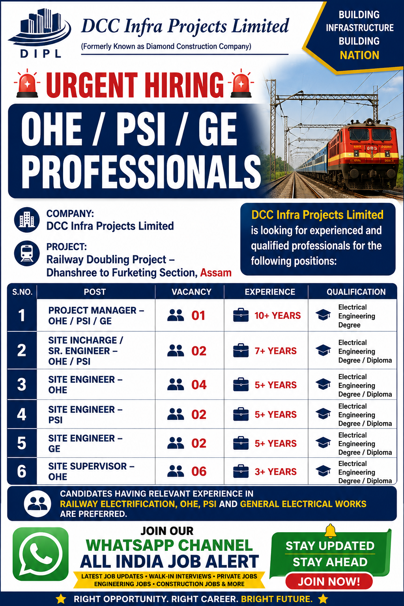

DCC Infra Projects Limited Recruitment 2026 – OHE, PSI & GE Jobs in Assam
DCC Infra Projects Limited Recruitment 2026: DCC Infra Projects Limited has announced an urgent hiring opportunity for experienced professionals in the fields of OHE, PSI and GE for a railway doubling project in Assam. Candidates having relevant experience in railway electrification, OHE, PSI and general electrical works can check the available positions and eligibility requirements before applying.
According to the recruitment poster, the company is looking for qualified and experienced electrical engineering professionals for its Railway Doubling Project – Dhanshree to Furketing Section, Assam. The recruitment drive includes positions such as Project Manager, Site Incharge/Senior Engineer, Site Engineer and Site Supervisor.

DCC Infra Projects Limited Recruitment 2026 – Overview
| Particular | Details |
|---|---|
| Company | DCC Infra Projects Limited |
| Project | Railway Doubling Project – Dhanshree to Furketing Section |
| Job Location | Assam |
| Industry | Railway Electrification / Electrical Infrastructure |
| Job Type | Project-based / Site Jobs |
| Qualification | Electrical Engineering Degree / Diploma |
| Experience | 3+ years to 10+ years depending on position |
Available Vacancies
The recruitment notification includes multiple vacancies for professionals with experience in railway electrification and related electrical works. Candidates should carefully check the experience and qualification requirements for the position they wish to apply for.
| No. | Position | Vacancy | Experience | Qualification |
|---|---|---|---|---|
| 1 | Project Manager – OHE / PSI / GE | 01 | 10+ Years | Electrical Engineering Degree |
| 2 | Site Incharge / Sr. Engineer – OHE / PSI | 02 | 7+ Years | Electrical Engineering Degree / Diploma |
| 3 | Site Engineer – OHE | 04 | 5+ Years | Electrical Engineering Degree / Diploma |
| 4 | Site Engineer – PSI | 02 | 5+ Years | Electrical Engineering Degree / Diploma |
| 5 | Site Engineer – GE | 02 | 5+ Years | Electrical Engineering Degree / Diploma |
| 6 | Site Supervisor – OHE | 06 | 3+ Years | Electrical Engineering Degree / Diploma |
About the Job Opportunity
This recruitment is focused on professionals who can work on railway electrification and electrical infrastructure activities. The project is associated with the railway doubling section between Dhanshree and Furketing in Assam. Such projects require experienced technical personnel who understand site execution, electrical works, safety procedures, coordination and project supervision.
Candidates applying for senior positions such as Project Manager and Site Incharge should have substantial experience in railway electrification or related electrical infrastructure projects. Candidates applying for Site Engineer and Site Supervisor positions should also have practical site experience and knowledge relevant to OHE, PSI or general electrical works.
Relevant experience in Railway Electrification, OHE, PSI and General Electrical Works is preferred. Applicants should therefore mention their relevant project experience clearly in their CV. Experience related to railway projects, electrical installation, testing, commissioning, site execution and supervision can be useful for these roles.
Educational Qualification
The recruitment poster specifies an Electrical Engineering Degree or Diploma for the listed positions. The required qualification may depend on the designation. Senior-level positions generally require higher experience along with an appropriate engineering qualification, while Site Engineer and Site Supervisor roles may accept a Degree or Diploma in Electrical Engineering as mentioned in the notification.
Candidates should make sure that their educational qualification, technical experience and previous project responsibilities are clearly mentioned in their updated CV. Providing accurate information can help the recruitment team evaluate the application for the appropriate position.
Experience Required
Experience requirements vary according to the position. The Project Manager role requires more than 10 years of experience, while the Site Incharge/Senior Engineer position requires more than 7 years. Site Engineer positions require more than 5 years of experience and the Site Supervisor position requires more than 3 years of experience.
Candidates with relevant railway electrification experience are particularly encouraged to apply. Applicants should preferably have practical knowledge of working at project sites and should be comfortable with responsibilities related to electrical construction, railway electrification, site coordination, execution and supervision.
Job Location
The job location mentioned in the recruitment poster is Assam. The project is identified as the Railway Doubling Project – Dhanshree to Furketing Section. Selected candidates may be required to work at the project site and should be prepared for site-based responsibilities.
Who Can Apply?
Candidates who possess the required Electrical Engineering Degree or Diploma and have relevant experience can apply for the suitable position. Preference is given to candidates who have experience in railway electrification, OHE, PSI and general electrical works.
- Electrical Engineering Degree or Diploma candidates can apply.
- Relevant railway electrification experience is preferred.
- OHE, PSI and electrical project experience can be beneficial.
- Candidates must meet the experience requirement of the selected post.
- Applicants should be willing to work at the Assam project location.
- Updated CV/resume should be prepared before applying.
How to Apply for DCC Infra Projects Limited Recruitment 2026
Interested and eligible candidates should prepare their updated CV mentioning their educational qualification, total experience, relevant railway/electrical project experience and the position for which they are applying.
Candidates can share their updated resume using the official contact details mentioned in the recruitment poster.
Company: DCC Infra Projects Limited
Email: dccinfra@dccinfra.in
Phone: 01746-222120
Website: dccinfra.co.in
While sending your CV, clearly mention the position applied for in the email subject line. Candidates should also ensure that their contact number and relevant work experience are correctly mentioned in the resume.
Send CV by EmailImportant Tips Before Applying
Before submitting your application, carefully check the position, required experience and qualification. Your CV should be updated and should preferably highlight experience related to railway electrification, OHE, PSI, electrical installation, testing, commissioning, site supervision or project execution.
Avoid sending incomplete resumes. Make sure your name, mobile number, email address, qualification, total experience, current designation and previous project details are clearly visible. If you have worked on railway or infrastructure projects, mention the project name, location and responsibilities wherever appropriate.
Contact Details
DCC Infra Projects Limited
Address shown in recruitment poster: SCO 327-28, Sector-20, HUDA Market, Kaithal
Phone: 01746-222120
Email: dccinfra@dccinfra.in
Website: dccinfra.co.in
Join Our WhatsApp Channel
Get the latest private jobs, construction jobs, engineering jobs, walk-in interviews and other job updates directly on WhatsApp.
All India Job Alert
Join WhatsApp ChannelFinal Note
DCC Infra Projects Limited Recruitment 2026 provides an opportunity for experienced electrical professionals looking for project-based opportunities in Assam. The available positions cover different levels, from Site Supervisor to Project Manager, with experience requirements ranging from 3+ years to 10+ years.
Candidates with experience in OHE, PSI, railway electrification and general electrical works should review the requirements carefully and apply for the position matching their experience and qualification. An updated and professional CV can help present your experience clearly to the recruitment team.
All candidates are advised to verify the recruitment details before submitting personal documents or accepting any employment offer. Do not make any payment to an individual or agency merely for a job application unless the authenticity and requirement are independently verified.